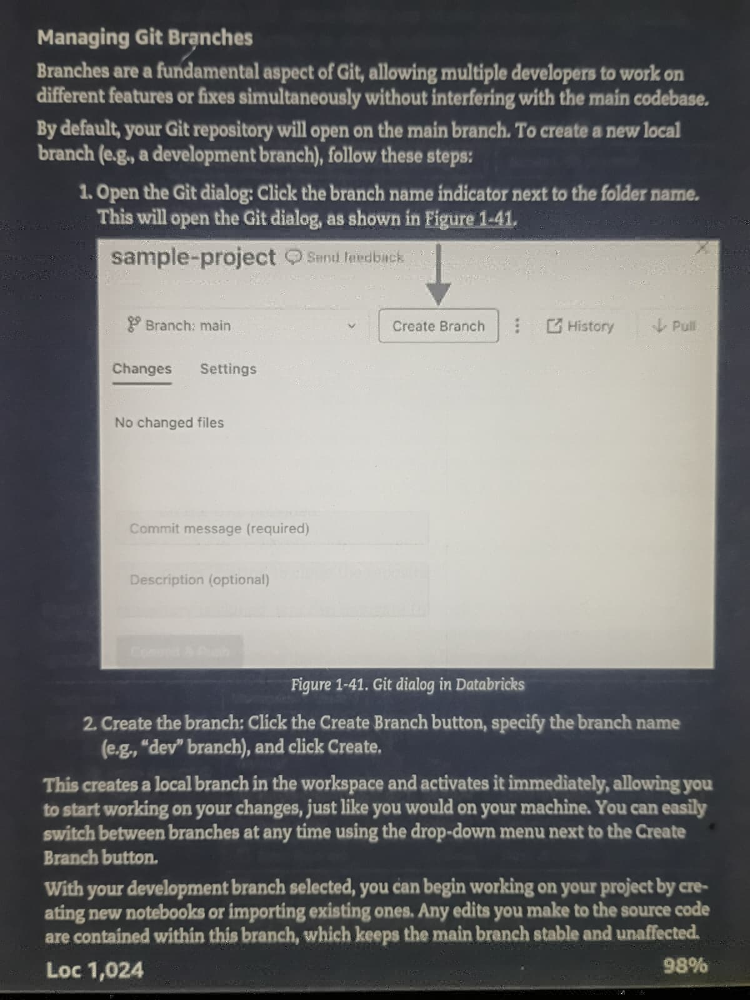
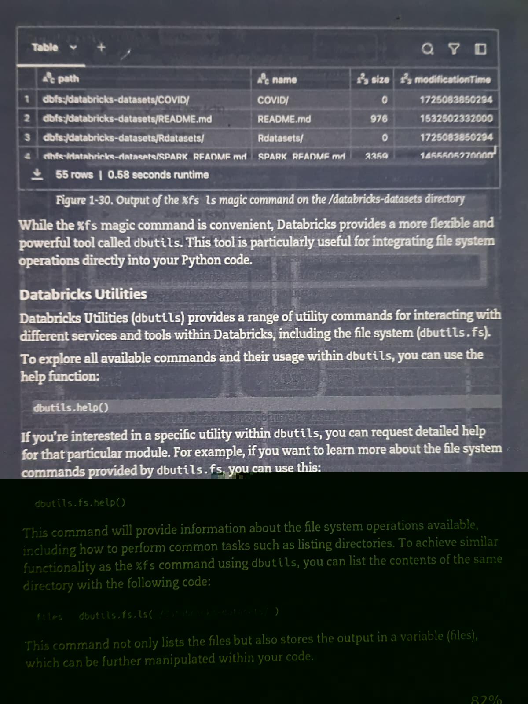
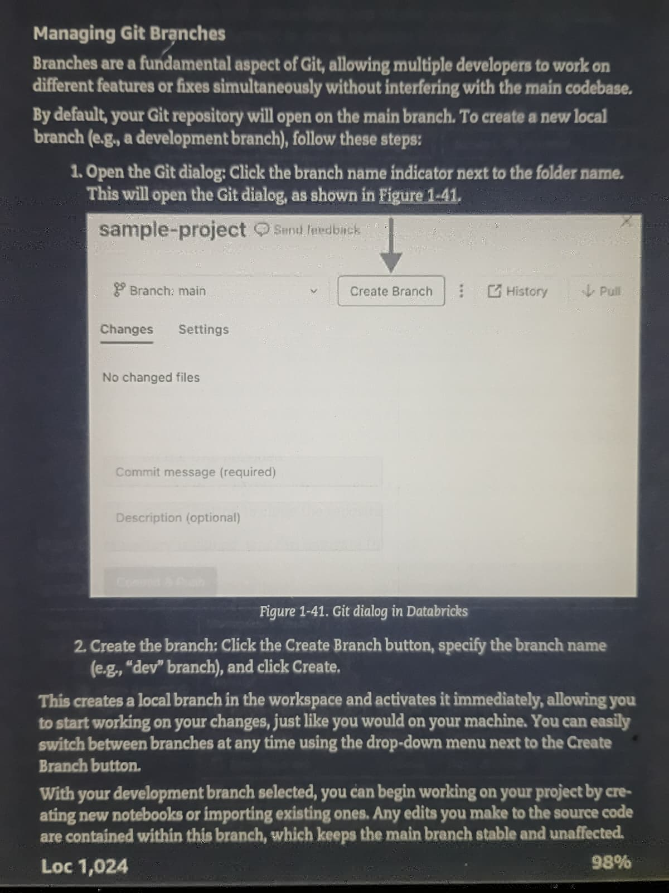
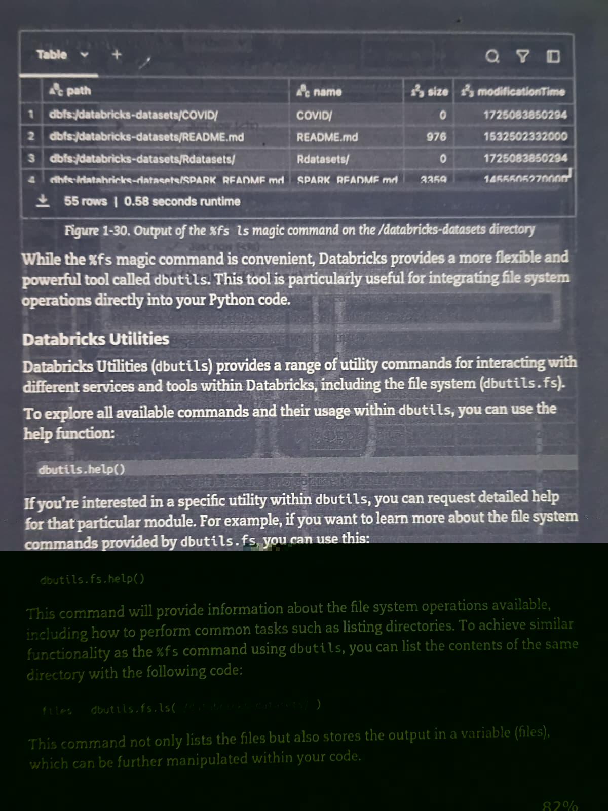
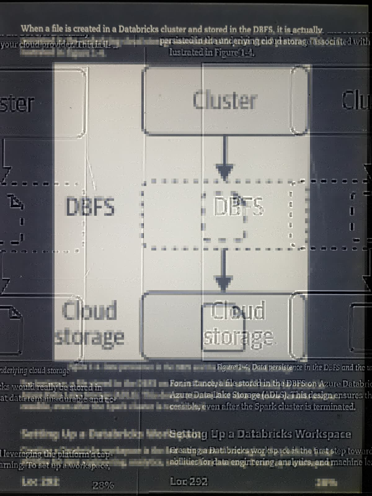
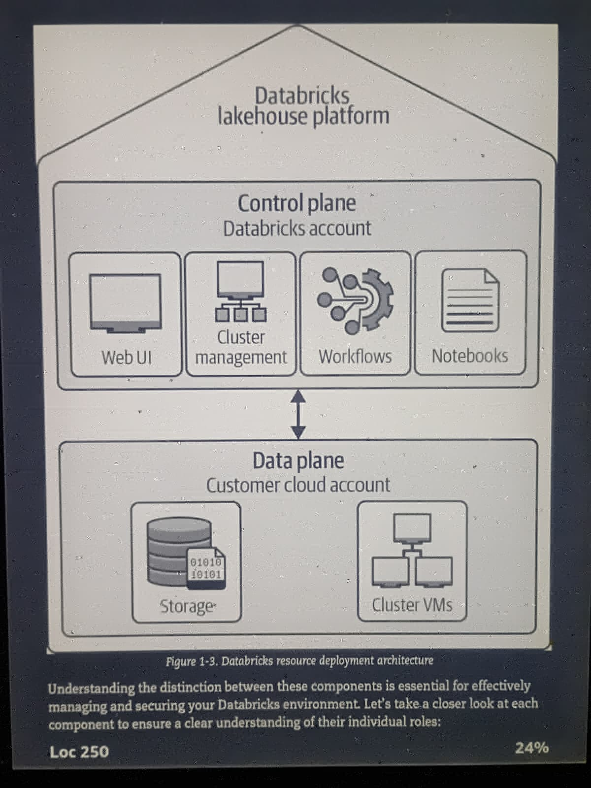
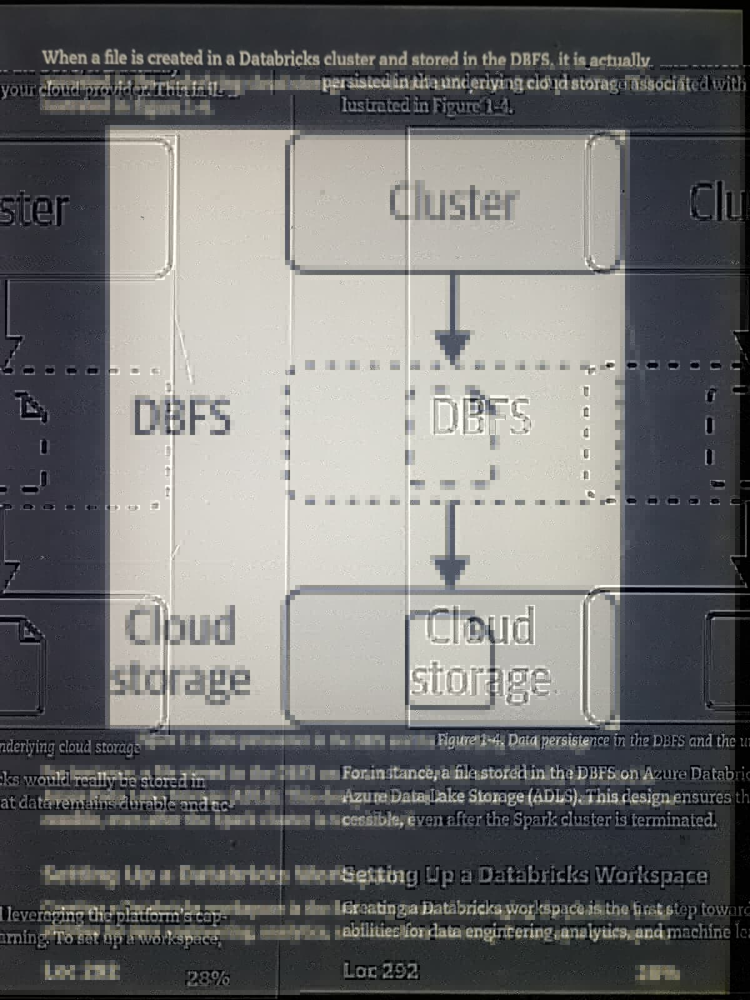
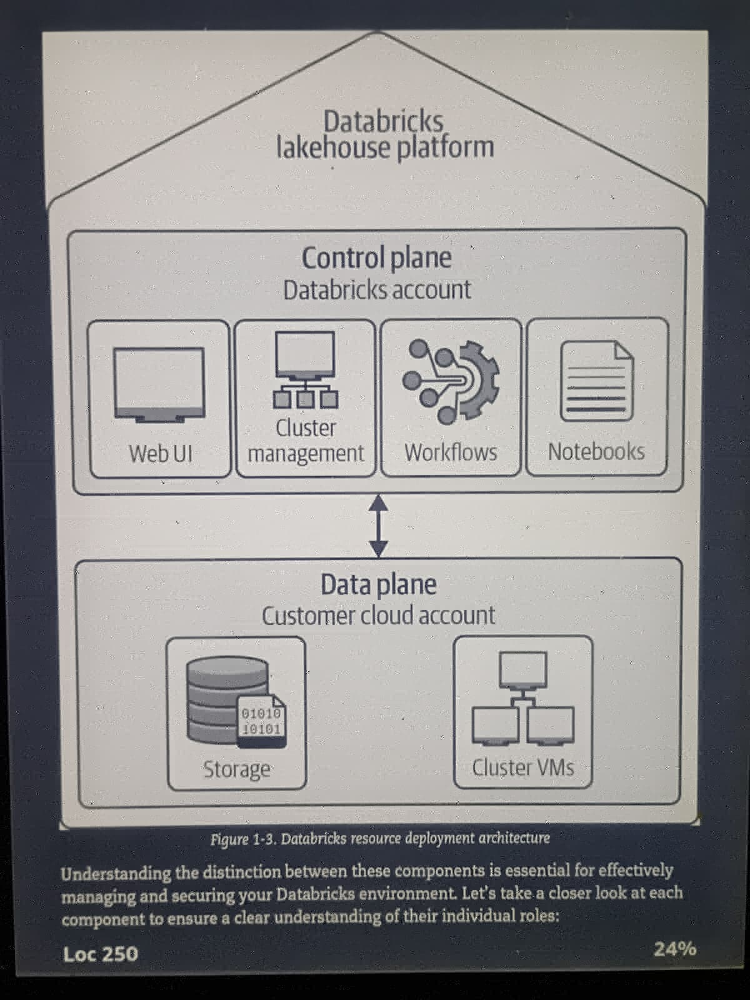

DATABRICKS ENGINEER
Peace, I hope you are well, thanks for coming to my page, I made this page to showcase all of the concepts, ideas, definitions, acronyms, visuals, technologies and programs that I'm learning as I get deeper into learning Databricks Engineering to help my company and work towards becoming a Databricks Engineer with them. It's something that they need a lot of help with currently so I'm going to learn as much as I can go help them and help myself.
Here are is some documentation and definitions to get you started on your Databricks Engineer journey, with enough repition that ideas stay in your head longer
- Python – Created by Guido van Rossum in 1991; widely used in Databricks for data analysis, ML, and scripting.
- SQL – Developed in the 1970s at IBM for relational databases; core for querying structured data in Databricks.
- R – Developed by Ross Ihaka and Robert Gentleman in the early 1990s for statistical computing; used in Databricks for analytics.
- Scala – Created by Martin Odersky in 2003; JVM language, used in Databricks for Spark jobs.
- Apache Spark – Developed at UC Berkeley in 2009; distributed computing engine for big data processing, core of Databricks.
- Data Lakes – Concept emerged in 2010s; centralized storage for raw structured/unstructured data, foundational for Databricks.
- Delta Lake – Open-source storage layer from Databricks (2019) adding ACID transactions to data lakes.
- ACID – Atomicity, Consistency, Isolation, Durability; ensures reliable transactions in databases/Delta Lake.
- ETL (Extract, Transform, Load) – Traditional data pipeline: transform data before loading it into the warehouse.
- ELT (Extract, Load, Transform) – Modern pipeline (common in Databricks): load raw data first, transform in-place (often using Delta Lake).
- Medallion Architecture – Databricks ETL/ELT pattern: Bronze (raw), Silver (cleaned), Gold (aggregated insights).
- Unity Catalog – Databricks 2021+ unified governance layer for data and AI assets (tables, files, ML models).
- Notebooks – Interactive coding environment (like Jupyter) integrated in Databricks for multi-language workflows.
- Linux “magic commands” – Shorthand in notebooks (e.g., %fs, %sh) to interact with files and shell.
Out of all the Databricks books I've sampled on my kindle so far the Databricks Certified Engineer Associate with the bird on the cover and the Databricks Lakehouse Platform with the Beaver on the cover have been the most in depth, hencewise I took photos of the parts that stood out to me the most and shared them below. The photos get really distorted when I pushed them to GitHub. I'm figuring out the issue and will gradually make things look better. In the meantime feel free to look at all these links I'm sharing you you can further your learning as well.
 





 


